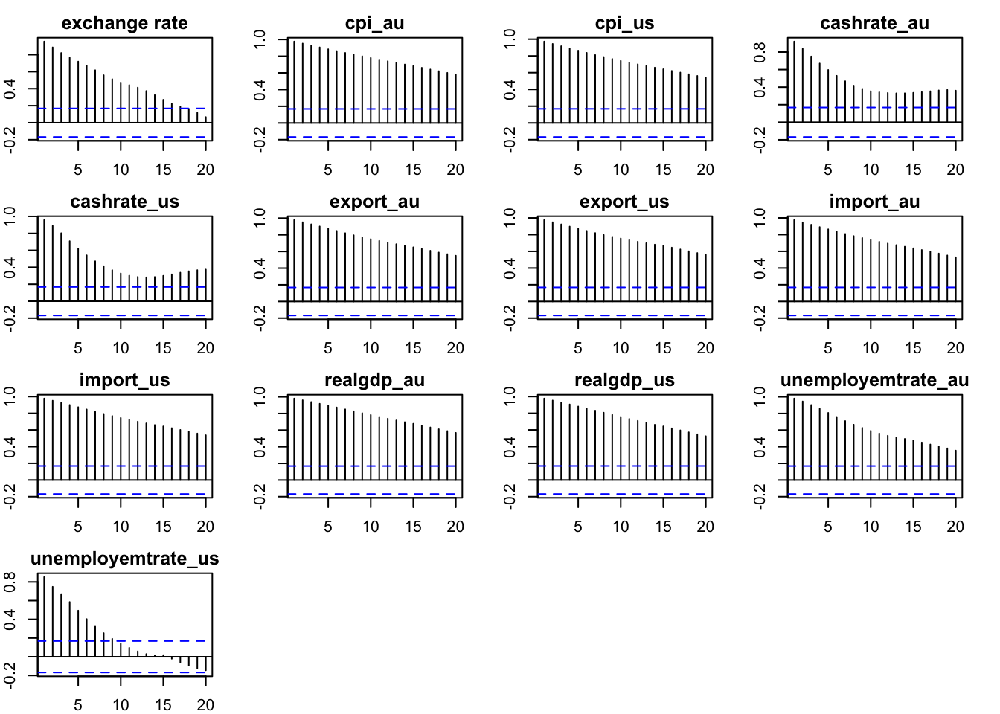
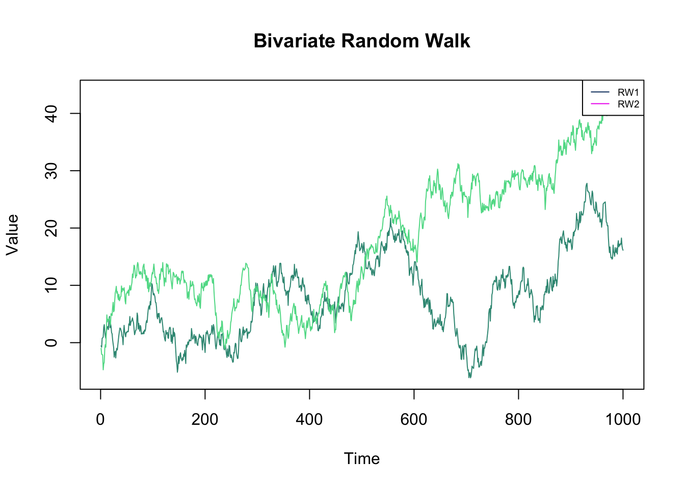
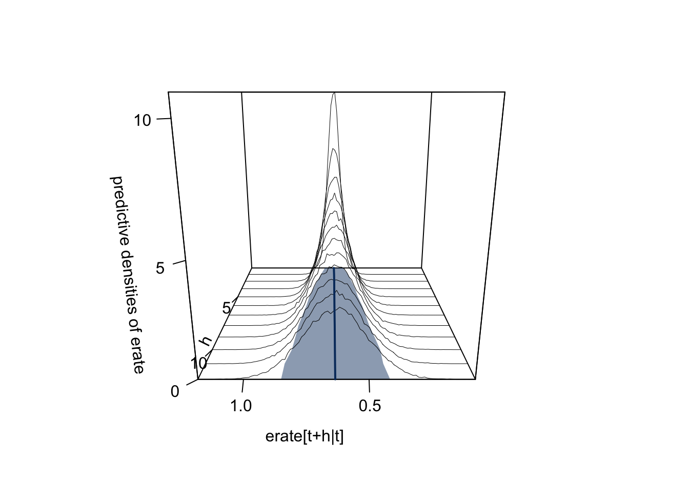
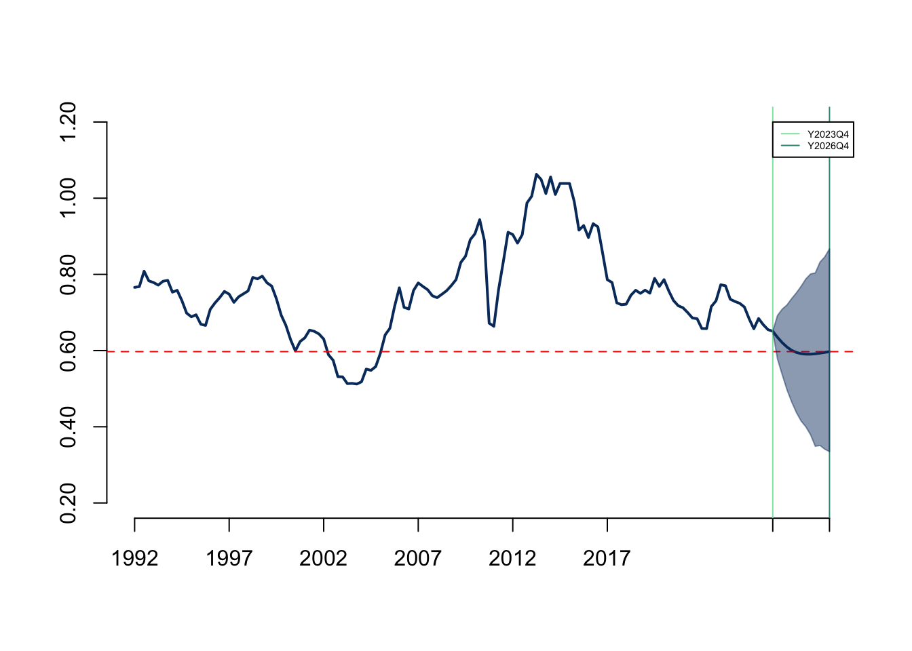
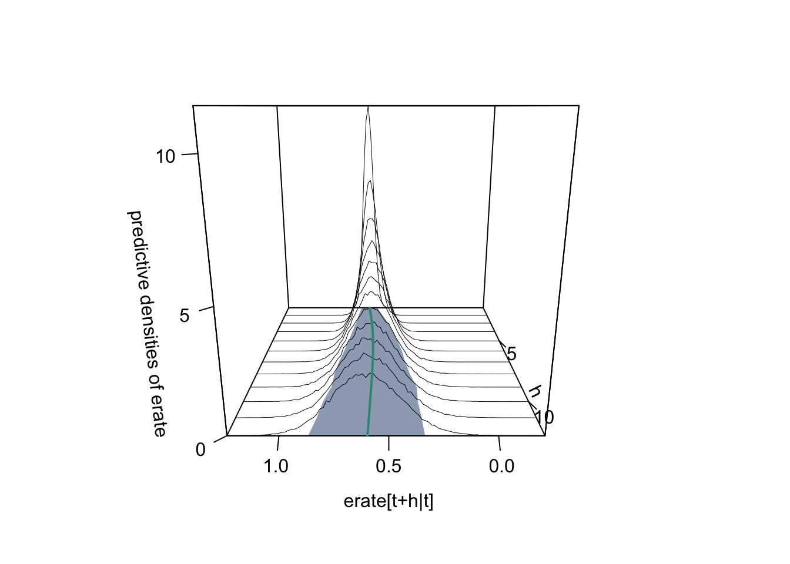

Exchange Rate Forecasting Using Bayesian VARs Model
Abstract. This research report explores how Bayesian VARs model predict AUD/USD exchange rate. Keywords. Bayesian Vars, Exchange rate, Forecasting, Minnesota Prior, Laplace distribution
Objective and Motivation
The objective of this research is to use the Bayesian Vector Autoregressions (VARs) method to forecast the exchange rate of the US dollar exchange rate against the Australian dollar.
The ability to accurately forecast the foreign exchange rate is crucial for Australia’s global trade and investment. Given the prominence of the US dollar as the world’s primary reserve currency, the monetary policies of the US Federal Reserve have a worldwide effect on the world economy, its significant influence on the Australia currency market should be important for domestic investors and policy maker as it can directly impact the AUD/USD exchange rate. Besides, America as one of the major trading partners for Australia, can impact bilateral trade flows and eventually affect the value of the AUD. Apart from the external from foreign countries, the domestic economic indicators can also be one of the determinants of the AUD/USD exchange rate.
The research is aimed to address the question for example, how the AUD/USD exchange rate will be in 3 months or even longer 1 year?
Data and Variables
To better forecast the change in the exchange rate, the 13 variables are selected as follows which contain both domestic and US economic indicators that affect the exchange rate in different ways.
Real GDP and interest rates have a significant effect on the exchange rate, a higher realGDP and interest rate in Australia may increase the demand for AUD, which will lead to an appreciation of AUD and a rise in the AUD/USD exchange rate. A higher CPI indicates a lower purchasing power relative to foreign currency which may lead to a depreciation of the domestic currency. The unemployment rate can in some way represent business activity and a country with a high unemployment rate will lower the attractiveness for foreign investors and weaken the domestic currency competitiveness in the currency market. The balance of trade, which is the difference between exports and imports, also can influence the demand for its currency, a trade surplus in AUD may increase the demand for AUD dollar.
\(erate_{t}\): AUD/USD exchange rate
AUS economic indicators
- \(crate\_au_{t}\): The Cash Rate Target, Australia
- \(rgdp\_au_{t}\): The Real Gross Domestic Product, Australia
- \(cpi\_au_{t}\): The Consumer Price Index, Australia
- \(unemr\_au_{t}\): The Unemployment rate, Australia
- \(impor\_au_{t}\): The Imports of Goods and Services, Australia
- \(expor\_au_{t}\): The Exports of Goods and Services, Australia
US economic indicators
- \(crate\_us_{t}\): The Federal Funds Effective Rate, United States
- \(rgdp\_us_{t}\): The Real Gross Domestic Product, United States
- \(cpi\_us_{t}\): The Consumer Price Index, United States
- \(unemr\_us_{t}\): The Unemployment rate, United States
- \(impor\_us_{t}\): The Imports of Goods and Services, United States
- \(expor\_us_{t}\): The Exports of Goods and Services, United States
Data Cleaning
For the data cleaning part, most data for AUS is from Reserve Bank of Australia (RBA) and Australian Bureau of Statistics (ABS), and data for the US is from FRED, the dataset spans from 1990 Q1 to 2023 Q4, comprising 136 observations. To better fit the model, the data has been transformed to ‘quarter’ to ensure that seasonality effects are removed and logged transformations have been applied to most data except exchange rate and cash rate to reducing outlier effects.
Visualisation of data
Plot the variables to see the patterns of data. It shows from the plots that the exchange rate and cash rate for the US fluctuate over time, the cash rate and unemployment for AU show a downward trend and all other variables have a clear upward trend, with the exports、imports, and GDP for both countries have a clear drop during the COVID-19 period.
Since most variables show a non-stationary pattern. To determine whether a unit root is present in a time series dataset, the ADF test will be conducted below.
Augmented Dickey-Fuller test for log transformed variables except exchange rates and cash rates.
From the plot we can observe all ACF plots have a high degree of persistence over time, indicating there is significant autocorrelation in the time series data.

Below is the p-value of each variable and only the cash rate for AUS has a p-value less than 0.05 which indicates that \(crateau_{t}\) is stationary.
P-value
exchange rate 0.736
cpi_au 0.214
cpi_us 0.450
cashrate_au 0.010
cashrate_us 0.270
export_au 0.498
export_us 0.365
import_au 0.176
import_us 0.603
realgdp_au 0.961
realgdp_us 0.633
unemployemtrate_au 0.352
unemployemtrate_us 0.358Below is the ADF test result for all non-stationary data taking the first difference. All variables in the first differences are stationary as the null hypothesis of non-stationary can be rejected.
P-value
exchange rate 0.010
cpi_au 0.027
cpi_us 0.024
cashrate_us 0.010
export_au 0.010
export_us 0.010
import_au 0.010
import_us 0.010
realgdp_au 0.010
realgdp_us 0.010
unemployemtrate_au 0.010
unemployemtrate_us 0.010It can be concluded that all variables are integrated at 1 at the 5% significance level of the ADF test, with the conclusion folding for \(crate\_au_{t}\) only at 1% significance level. Appropriate prior distributions will be used to accommodate this fact for the VAR model.
Model and Hypotheses
In this research, the VAR(p) model will be applied to forecast the AUD/USD exchange rate, below is the basic model that is used in this research.
The basic VAR(p) model
\[\begin{aligned} y_{t}&=\mu_{0}+A_{1}y_{t-1}+\cdots+A_{p}y_{t-p}+\epsilon_{t} \\ \epsilon_{t}|Y_{t-1} &\sim iid\mathcal{N}(0_{13},\Sigma) \end{aligned}\]For time \(t\) = 1,2,…..,\(T\)：
- \(y_t\) is a \(N(13)\times 1\) vector of observations at time \(t\)
- \(\mu_0\) is a \(N(13)\times 1\) vector of constant terms
- \(A_i\) is a \(N(13)\times N(13)\) matrix of autoregressive slope parameters
- \(\epsilon_t\) is a \(N(13)\times 1\) vector of error terms and follows a multivariate white noise process
- \(Y_{t-1}\) is the information set collecting observations on y up to time \(t-1\)
- \(\Sigma\) is a \(N(13)\times N(13)\) covariance matrix of the error term
For further research, we may use the predictive density function like 3-year-ahead forecast and forecast with Bayesian VARS.
Modelling Framework
The basic model
\[\begin{align} Y &=XA+E\\ E|X&\sim \mathcal{MN}_{T\times N}(0, \Sigma, I_T)\\ Y|X,A,\Sigma&\sim \mathcal{MN}_{T\times N} (XA, \Sigma, I_T) \end{align}\]Where \(Y\) is a \(T\times 13\) Matrix, \(X\) is a \(T\times(1+p\times13)\), \(A\) is a \((1+p\times13)\times13\) matrix that contains \(\mu_{0}\) and vectors of the autoregressive slope parameters and \(E\) is a \(T\times13\) matrix contains vetors of error terms.
The kernel of the likelihood function:
\[\begin{align} L(A,\Sigma|Y,X) \propto det(\Sigma)^{-\frac{T}{2}}exp\{-\frac{1}{2}tr[\Sigma^{-1}(Y-XA)'(Y-XA)]\} \end{align}\]The basic model is based on Natural-conjugate prior distribution, where the \(A\) follows a Matrix-variate Normal distribution and \(\Sigma\) follows an Inverse Wishart distribution.
\[\begin{align} p(A,\Sigma) &= p(A|\Sigma)p(\Sigma) \\ A|\Sigma &\sim \mathcal{MN}_{K \times N}(\underline{A},\Sigma,\underline{V}) \\ \Sigma &\sim \mathcal{IW}_N(\underline{S},\underline{\nu}) \end{align}\]The Minnesota prior is typically a good choice for specifying priors in BVAR model especially when the model involves many macroeconomic variables. It assumes the variables follow a random walk and it is suitable for unit root non-stationary variables such as in our case, most variables are integrated at 1 at the 5% significance level of the ADF test, where:
\[\begin{align} \underline{A} &= \begin{bmatrix}0_{N \times 1} & I_{N} & 0_{N \times (p-1)N}\end{bmatrix}'\\ \underline{V} &= diag( \begin{bmatrix} \kappa_2 & \kappa_1(p^{-2}\otimes I_N') \end{bmatrix}) \end{align}\]The prior mean \(\underline{A}\) for the first lag of each variable (the identity matrix portion) is one, while all other coefficients including intercepts, are zeroes. For the column-specific prior covariance \(\underline{V}\), two shrinkage hyper-parameters \(\kappa_1\) and \(\kappa_2\) represent the overall shrinkage level for slopes and constant terms respectively.
For posterior distribution, the kernel of the posterior distribution takes the form of the product of the likelihood and the prior distributions.
\[\begin{align*} p(A,\Sigma|Y,X) &\propto L(A,\Sigma|Y,X)p(A,\Sigma) \\ &= L(A,\Sigma|Y,X)p(A|\Sigma)p(\Sigma) \end{align*}\] \[\begin{align} p(A,\Sigma|Y,X) &\propto \det(\Sigma)^{-\frac{T}{2}} \\ &\times exp\{-\frac{1}{2}tr[\Sigma^{-1}(Y-XA)'(Y-XA)]\} \\ &\times \det(\Sigma)^{-\frac{N+K+\underline{v}+1}{2}} \\ &\times exp\{-\frac{1}{2}tr[\Sigma^{-1}(A-\underline{A}) \underline{V}^{-1}(A-\underline{A})]\} \\ &\times exp\{-\frac{1}{2}tr[\Sigma^{-1}\underline{S}]\} \end{align}\]The kernel can be represent as the normal-inverse Wishart distribution and we can get the following full conditional joint posterior distribution:
\[\begin{align} p(A|Y,X,\Sigma) &= \mathcal{MN}_{K \times N}(\bar{A}, \Sigma, \bar{V}) \\ p(\Sigma|Y,X) &= \mathcal{IW}_N(\bar{S},\bar{\nu}) \\ \\ \bar{V} &= (X'X + \underline{V}^{-1})^{-1} \\ \bar{A} &= \bar{V}(X'Y + \underline{V}^{-1}\underline{A}) \\ \bar{\nu} &= T + \underline{\nu} \\ \bar{S} &= \underline{S} + Y'Y + \underline{A}'\underline{V}^{-1}\underline{A} - \bar{A}'\bar{V}^{-1}\bar{A} \\ \end{align}\]The extended model
The extended model will be built based on the the change in distribution of the error to Laplace distribution instead of the normally distributed errors assumption. The Laplace distribution is suitable for describing financial anomalies due to its sharp peaks and thick tails and the use of this distribution improves the robustness of the model to anomalies and is particularly suitable for financial time series. As our variables are most financial time series data, a Laplace distribution is more suitable to apply to our error term.
Following Eltoft,Kim, and Lee 2006b, for covariance with a general Kronecker structure, if each \({\lambda_t}\) has an independent exponential distribution with mean \({\alpha}\), then marginally \({U_t}\) has a multivariate Laplace distribution with mean vector 0 and covariance matrix \({\alpha\Sigma}\).
\[\begin{align} U_t &\sim \text{Laplace}(0, \alpha\Sigma) \\ U_t | \lambda_t &\sim \mathcal{MN}(0, \Sigma, \lambda_t I_T) \\ \lambda_t &\sim \text{Exponential}(\frac{1}{\alpha}) \end{align}\]The kernel of the likelihood function:
\[\begin{align} L(A,\Sigma,\lambda_t|Y,X) &\propto \det(\Sigma)^{-\frac{T}{2}} \det(\lambda_t I_T)^{-\frac{N}{2}} exp\{-\frac{1}{2} tr[\Sigma^{-1} (Y-XA)' (\lambda_t I_T)^{-1} (Y-XA) ]\} \end{align}\]For posteriors distribution, \(A\), \(\Sigma\) and \(\lambda_t\) can then be derived using the likelihood and the prior distributions as follows:
\[\begin{align} p(A,\Sigma|Y,X) &\propto L(A,\Sigma,\lambda_t|Y,X)p(A,\Sigma) \\ \\ &= \det(\Sigma)^{-\frac{T}{2}} \det(\lambda_t I_T)^{-\frac{N}{2}} exp\{-\frac{1}{2} tr[\Sigma^{-1} (Y-XA)' (\lambda_t I_T)^{-1} (Y-XA) ]\} \\ &\times \det(\Sigma)^{-\frac{N+k+\underline{\nu}+1}{2}} exp\{-\frac{1}{2}tr[\Sigma^{-1}(A-\underline{A})'(\underline{V})^{-1}(A-\underline{A})]\} \\ &\times exp\{-\frac{1}{2}tr[\Sigma^{-1}\underline{S}]\} \\ &= \det(\Sigma)^{-\frac{T+N+K+\underline{\nu}+1}{2}} \det(\lambda_t I_T)^{-\frac{N}{2}} \\ &\times exp\{-\frac{1}{2} tr[\Sigma^{-1}(Y'(\lambda_t I_T)^{-1}Y - 2A'X'(\lambda_t I_T)^{-1}Y + A'X'(\lambda_t I_T)^{-1}XA \\ &+ A'\underline{V}^{-1}A -2A'\underline{V}^{-1}\underline{A} + \underline{A}'\underline{V}^{-1}\underline{A} + \underline{S})]\} \end{align}\]The kernel can be rearranged in the form of the Matrix-variate normal-inverse Wishart distribution.
\[\begin{align} p(A,\Sigma|Y,X) &\sim MNIW(\bar{A},\bar{V},\bar{S},\bar{\nu}) \\ &\\ \bar{V} &= (X'(\lambda_t I_T)^{-1}X + \underline{V}^{-1})^{-1} \\ \bar{A} &= \bar{V}(X'(\lambda_t I_T)^{-1}Y + \underline{V}^{-1}\underline{A}) \\ \bar{\nu} &= T + \underline{\nu}\\ \bar{S} &= Y'(\lambda_t I_T)^{-1}Y + \underline{A}'\underline{V}^{-1}\underline{A} + \underline{S} - \bar{A}'\bar{V}^{-1}\bar{A} \end{align}\]The kernel of the fully conditional posterior distribution of \(\lambda_t\) is then derived as follows:
\[\begin{align} p(\lambda_t|Y,X,A,\Sigma) &\propto L(A,\Sigma,\lambda_t|Y,X)p(\lambda_t) \\ \\ &\propto \det(\lambda_t I_T)^{-\frac{N}{2}} exp\{-\frac{1}{2} tr[\Sigma^{-1} (Y-XA)' (\lambda_t I_T)^{-1} (Y-XA) ]\} \\ &\times \frac{1}{\alpha}exp\{ -\frac{1}{\alpha}\lambda_t \}\\ &= \lambda_t^{-\frac{TN}{2}} exp\{-\frac{1}{2}\frac{1}{\lambda_t} tr[\Sigma^{-1}(Y-XA)'(Y-XA)]\}\\ &\times exp\{-\frac{1}{\alpha}\lambda_t \}\\ &= \lambda_t^{-\frac{TN}{2}+1-1} exp\{-\frac{1}{2}[\frac{[tr[\Sigma^{-1}(Y-XA)'(Y-XA)]}{\lambda_t} +\frac{2}{\alpha}\lambda_t]\} \end{align}\]The above expression can be rearranged in the form of a Generalized inverse Gaussian distribution kernel as follows:
\[\begin{align} \lambda_t|Y,A,\Sigma &\sim GIG(a,b,p) \\ \\ a &=\frac{2}{\alpha} \\ b &= tr[\Sigma^{-1}(Y-XA)'(Y-XA)] \\ p &= -\frac{TN}{2}+1 \end{align}\]Proof of model validity
Proof of basic model validity
To test the model validity, we simulated 1000 observations from a bi-variate Gaussian random walk process with the covariance matrix equal to the identity matrix of order 2 to see how the autoregressive and the covariance matrices and the posterior mean of the constant term behave.

## Posterior sample draw
posterior.draws = function (S, Y, X){
# normal-inverse Wishard posterior parameters
V.bar.inv = t(X)%*%X + diag(1/diag(V.prior))
V.bar = solve(V.bar.inv)
A.bar = V.bar%*%(t(X)%*%Y + diag(1/diag(V.prior))%*%A.prior)
nu.bar = nrow(Y) + nu.prior
S.bar = S.prior + t(Y)%*%Y + t(A.prior)%*%diag(1/diag(V.prior))%*%A.prior - t(A.bar)%*%V.bar.inv%*%A.bar
S.bar.inv = solve(S.bar)
# posterior draws
Sigma.posterior = rWishart(S, df=nu.bar, Sigma=S.bar.inv)
Sigma.posterior = apply(Sigma.posterior,3,solve)
Sigma.posterior = array(Sigma.posterior,c(N,N,S))
A.posterior = array(rnorm(prod(c(dim(A.bar),S))),c(dim(A.bar),S))
L = t(chol(V.bar))
for (s in 1:S){
A.posterior[,,s]= A.bar + L%*%A.posterior[,,s]%*%chol(Sigma.posterior[,,s])
}
output = list(A.posterior=A.posterior, Sigma.posterior=Sigma.posterior)
return(output)
}[1] "Posterior mean of the covariance matrix Sigma:" [,1] [,2]
[1,] 0.98044808 0.08913688
[2,] 0.08913688 1.01820408[1] "Posterior mean of the autoregressive coefficient matrix A:" [,1] [,2]
[1,] 0.060932051 0.076502499
[2,] 0.989452714 0.004833626
[3,] 0.002320694 0.995929267The diagonal entries of the covariance matrix are close to 1, which indicates that each variable has a strong autoregressive relationship with itself and similarly, the diagonal elements of the autoregressive coefficient matrix are close to one, suggesting that each variable is heavily influenced by its past value. Besides, the posterior means for the constant terms is close to 0, the above can indicate that the estimated parameter constant term and means are consistent with what we expect given a Minnesota prior.
Proof of extended model
The Gibbs sampler method will be applied to generate random draws from the full conditional posterior distribution:
- Draw \(\Sigma^{(s)}\) from the \(IW(\bar{S},\bar{\nu})\) distribution.
- Draw \(A^{(s)}\) from the \(MN(\bar{A},\Sigma^{(s)}, \bar{V})\) distribution.
- Draw \(\lambda_t^{(s)}\) from \(GIG(a,b,p)\).
Repeat steps 1, step 2 and 3 for \(S_1\)+\(S_2\)times.
Discard the first draws that allowed the algorithm to converge to the stationary posterior distribution.
Output is \(\left\{ {A^{(s)}, \Sigma^{(s)}}, \lambda_t^{(s)}\right\}^{S_1+S_2}_{s=S_1+1}\).
# setup
S1 = 5000 # will be discard
S2 = 45000
total_S = S1+S2
A.posterior = array(NA, dim = c((1+N*p),N,S1+S2))
Sigma.posterior = array(NA, dim = c(N,N,S1+S2))
lambda.posterior = matrix(NA, S1+S2, 1)
# set the initial value of lambda
lambda.posterior[1] = 5
# parameter alpha
lambda.priors = list(alpha = 1)[1] "Posterior mean of the covariance matrix Sigma:" [,1] [,2]
[1,] 0.97888557 0.08787219
[2,] 0.08787219 1.01737828[1] "Posterior mean of the autoregressive coefficient matrix A:" [,1] [,2]
[1,] 0.060874386 0.081041438
[2,] 0.988759465 0.005080126
[3,] 0.002565558 0.995564443Similarly, the posterior mean of the autoregressive and the covariance matrices are close to an identity matrix and the posterior mean of the constant term is close to zero, so we can conclude that the extended model is also valid.
Forecasting
The forecast will focus on two models with the sample period from 1990 Q1 to 2023Q4, and forecast how the exchange rate changes for the future up to 2026Q4. ## Forecasting with basic model
# sampling predictive density
for (s in 1:S){
A.posterior.draw = A.posterior.simu[,,s]
Sigma.posterior.draw = Sigma.posterior.simu[,,s]
x.Ti = Y[(nrow(Y)-p+1):nrow(Y),]
x.Ti = x.Ti[p:1,]
for (i in 1:h){
x.T = c(1,as.vector(t(x.Ti)))
Y.f = rmvnorm(1, mean = x.T%*%A.posterior.draw, sigma=Sigma.posterior.draw)
x.Ti = rbind(Y.f,x.Ti[1:(p-1),])
Y.h[i,,s] = Y.f[1:N]
}
}################################### may not use
# plots of forecasts
ex_rate.point.f = apply(Y.h[,1,],1,mean)
ex_rate.interval.f = apply(Y.h[,1,],1,hdi,credMass=0.90)
ex_rate.range = range(y[,1],ex_rate.interval.f)
par(mfrow=c(1,1), mar=rep(3,4),cex.axis=1)
plot(1:(length(y[,1])+h),c(y[,1],ex_rate.point.f), type="l", ylim=ex_rate.range, axes=FALSE, xlab="", ylab="", lwd=2, col=mcxs1)
axis(1,c(1,21,41,61,81,101, nrow(y),nrow(y)+h),c("1992","1997","2002","2007","2012","2017","",""), col="black")
# Assuming ex_rate.range is already set correctly as per your code
axis(2, at=seq(from=ex_rate.range[1], to=ex_rate.range[2], length.out=5),
labels=round(seq(from=ex_rate.range[1], to=ex_rate.range[2], length.out=5), 2),
col="black")
end_y_value <- ex_rate.point.f[12] # Set this to your actual true y-value
abline(h=end_y_value, col="red", lty=2, lwd=1)
text(x=nrow(y), y=9.65, srt=90, "2025-12")
abline(v=nrow(y), col=mcxs4)
text(x=nrow(y)+h, y=9.65, srt=90, "2026-12")
abline(v=nrow(y)+h, col=mcxs2)
polygon(c(length(y[,1]):(length(y[,1])+h),(length(y[,1]):(length(y[,1])+h))[13:1]),
c(y[136,1],ex_rate.interval.f[1,],ex_rate.interval.f[2,12:1],y[136,1]),
col=mcxs1.shade1, border=mcxs1.shade1)

Forecasting on extended model
# setup
S1 = 5000 # will be discard
S2 = 45000
total_S = S1+S2
A.posterior = array(NA, dim = c((1+N*p),N,S1+S2))
Sigma.posterior = array(NA, dim = c(N,N,S1+S2))
lambda.posterior = matrix(NA, S1+S2, 1)
# set the initial value of lambda
lambda.posterior[1] = 5
# parameter alpha
lambda.priors = list(alpha = 1)
posterior.draws.extended = function (total_S, Y, X){
for (s in 1:total_S){
V.bar.inv = t(X)%*%X + diag(1/diag(lambda.posterior[s]* V.prior))
V.bar = solve(V.bar.inv)
A.bar = V.bar%*%(t(X)%*%Y + diag(1/diag(lambda.posterior[s]* V.prior))%*%A.prior)
nu.bar = nrow(Y) + nu.prior
S.bar = S.prior + t(Y)%*%Y + t(A.prior)%*%diag(1/diag(lambda.posterior[s]* V.prior))%*%A.prior - t(A.bar)%*%V.bar.inv%*%A.bar
S.bar.inv = solve(S.bar)
Sigma.posterior.IW = rWishart(1, df=nu.bar, Sigma=S.bar.inv)
Sigma.posterior.draw = apply(Sigma.posterior.IW,3,solve)
Sigma.posterior[,,s] = Sigma.posterior.draw
A.posterior[,,s] = array(rnorm(prod(c(dim(A.bar),1))),c(dim(A.bar),1))
L = t(chol(V.bar))
A.posterior[,,s] = A.bar + L%*%A.posterior[,,s]%*%chol(Sigma.posterior[,,s])
a = 2 / lambda.priors$alpha
deviation_matrix = A.posterior[,,s] - A.prior
weighted_deviation_squared = t(deviation_matrix) %*% solve(V.prior) %*% deviation_matrix
b = sum(diag(solve(Sigma.posterior[,,s] %*% weighted_deviation_squared)))
p = - (T * N) / 2 + 1
if (s!=total_S){
lambda.posterior[s+1] = GIGrvg::rgig(n=1, lambda = p, chi = b, psi = a)
}
}
output = list (A.posterior.exten = A.posterior,
Sigma.posterior.exten = Sigma.posterior,
lambda.posterior.exten = lambda.posterior)
return(output)
}
S1 = 5000 # determine the
S2 = 45000 # number of draws
total_S = S1+S2
posterior.ext = posterior.draws.extended(total_S = total_S, Y=Y, X=X)
A.posterior.ext.simu = posterior.ext$A.posterior.exten[,,(S1+1):total_S]
Sigma.posterior.ext.simu = posterior.ext$Sigma.posterior.exten[,,(S1+1):total_S]
## Three-year ahead forecasting h=12
# set up
h = 12
S = 45000
Y.h.ext = array(NA,c(h,N,S))# sampling predictive density
for (s in 1:S){
A.posterior.draw = A.posterior.ext.simu[,,s]
Sigma.posterior.draw = Sigma.posterior.ext.simu[,,s]
x.Ti = Y[(nrow(Y)-p+1):nrow(Y),]
x.Ti = x.Ti[p:1,]
for (i in 1:h){
x.T = c(1,as.vector(t(x.Ti)))
Y.f = rmvnorm(1, mean = x.T%*%A.posterior.draw, sigma=Sigma.posterior.draw)
x.Ti = rbind(Y.f,x.Ti[1:(p-1),])
Y.h.ext[i,,s] = Y.f[1:N]
}
}

